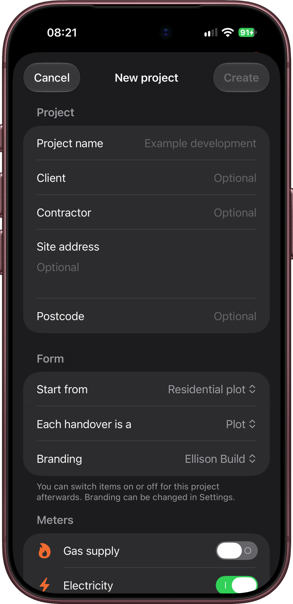
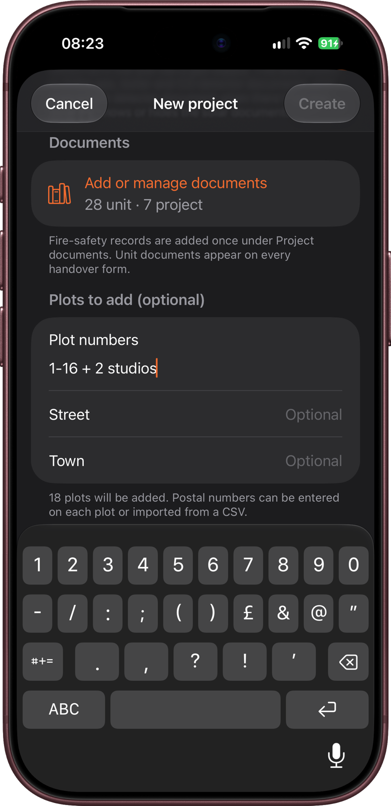
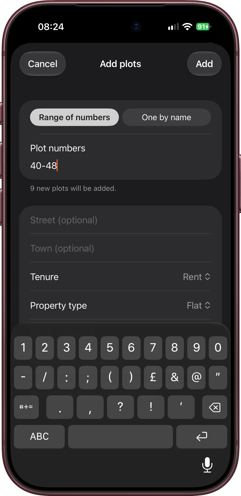
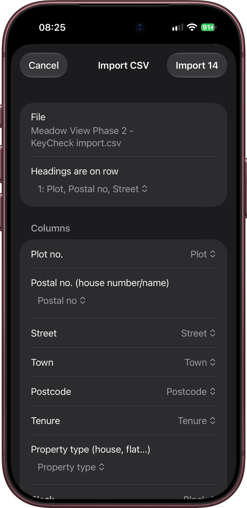
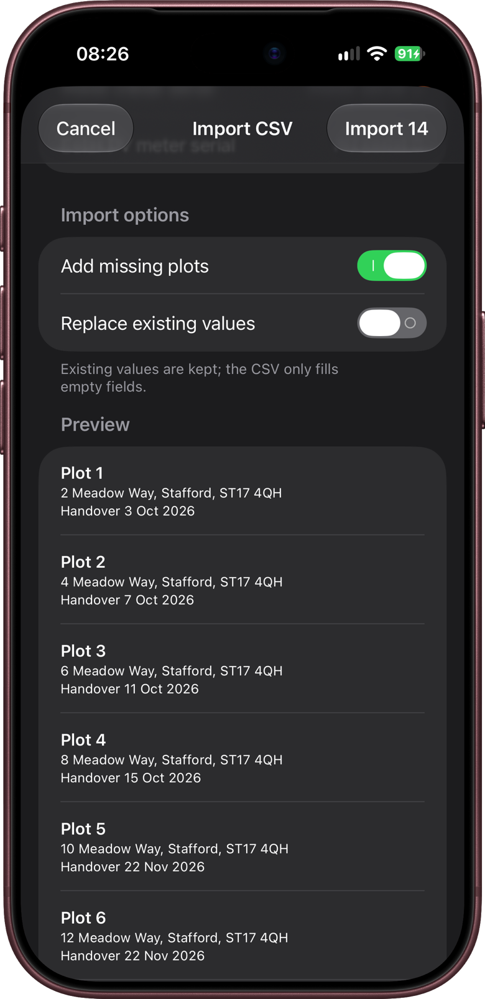
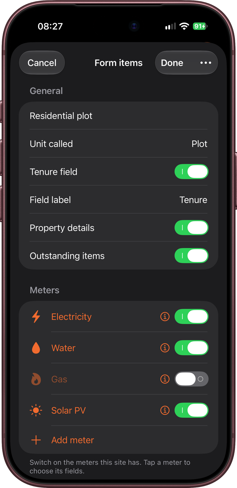
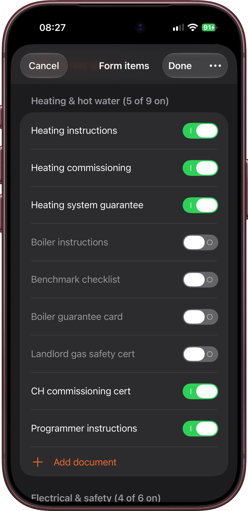
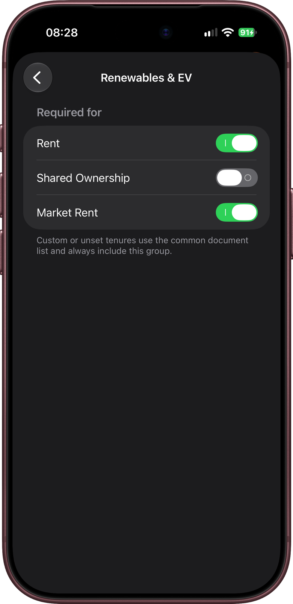

Set up a new site: create the project, add plots, import addresses and meter details from a spreadsheet, and choose what goes on the handover form.
You can set a project up on site, but it's often quicker at a desk before the first visit, with the client's plot schedule to hand.
What to have to hand
- The site name, and the client and contractor if you want them on the PDFs.
- The plot numbers, for example "1 to 40, except 13".
- Optional: the client's plot schedule as a spreadsheet, with postal addresses, tenures or meter numbers. KeyCheck can read these in, so you don't have to type them.
Creating the project
- On the Projects screen, tap New project.
- Fill in the sections described below. Only Project name is needed. Everything else can be added or changed later.
- Tap Create. The project opens, ready to use.
Project
Project name, Client, Contractor, Site address and Postcode. These appear on your PDFs. The postcode is also given to each new plot, and the site address and postcode put the project on the project map (chapter 9).
Form
- Start from: the starting list of form items.
- Residential plot: houses and flats, with tenure, the usual house keys, and the documents a new home needs.
- Commercial building: offices, units and other commercial buildings. There are no keys to start with, because every building is different: you add them on each building's form.
- Any reusable templates you've saved also appear here (see the end of this chapter).
- Each handover is a: Plot, Flat, Unit, Building or Block. This is the word KeyCheck uses throughout the project and on the PDFs. This manual says "plot" throughout.
- Branding: the branding profile for this project's PDFs (chapter 2).

Meters
- Gas supply: switch on if the site has gas. This also shows the gas, boiler and CO detector documents. With no gas, KeyCheck uses a heat detector document instead.
- The other meters (electricity, water and solar PV) can be switched on or off. Switching off Solar PV also hides the solar documents.
Documents
Add or manage documents shows how many documents are on each plot's form (unit documents) and how many are recorded once for the whole site (project documents, such as the fire strategy). You can leave these as they are and adjust them later. Chapter 6 covers documents in detail.
Plots to add (optional)
This section appears when each handover is a Plot.
- Plot numbers: type the plots, for example
2-16, 18, 22. The line underneath shows how many plots will be added, so you can check before tapping Create. The next section explains what you can type. - Street and Town: given to every plot you add here. Leave them blank if the plots are on different streets.
You can also leave this blank and add plots after creating the project.

Typing plot numbers
Type plot numbers and ranges separated by commas. KeyCheck understands these:
| You type | KeyCheck adds |
|---|---|
1-20 or 1 to 20 | Plots 1 to 20 |
2-16, 18, 22 | Plots 2 to 16, then 18 and 22 |
1-16 + 2 studios | Plots 1 to 16, then Studio 1 and Studio 2 |
12A | Plot 12A |
A-F | Plots A to F |
Unit A-F | Unit A to Unit F |
A1-A6 | A1 to A6 |
Block 01-06 | Block 01 to Block 06, keeping the zeros |
- And and plus work the same as +, so
1-16 and 2 studiosalso works. - A range can hold up to 500 plots.
- Plots already in the project are skipped, so you can't add the same plot twice.
- If KeyCheck can't make sense of what you've typed, the line underneath turns orange and says no plot numbers were recognised.
Postal numbers (house numbers) rarely follow plot numbers, so KeyCheck doesn't try to guess them. Type them on each plot, or import them from a spreadsheet (see below).
Adding more plots later
- Open the project and tap Add plots (the + button, top right).
- Choose Range of numbers, or One by name for a single building or unit with a name, such as "Main building".
- Type the numbers or name.
- Optionally, fill in Street, Town, Tenure, Property type, Block and House type. These are given to every plot you're adding, which saves time when a run of plots are all the same, for example "plots 20 to 28, Shared Ownership flats, Block B".
- Tap Add.
On projects where each handover is a unit, building or block, One by name is chosen to start with.

Importing addresses and meter details from a spreadsheet
If the client or developer has a plot schedule in Excel or Numbers, KeyCheck can read postal addresses, tenures, property details, handover dates and meter numbers from it. It can also create any plots that aren't in the project yet.
KeyCheck reads CSV files. CSV ("comma-separated values") is a plain spreadsheet format that every spreadsheet app can save.
Saving the spreadsheet as CSV
- Excel: File → Save As, and choose CSV UTF-8.
- Numbers: File → Export To → CSV.
Save it somewhere your iPhone or iPad can reach, such as iCloud Drive or OneDrive. Files in OneDrive, SharePoint or Teams appear in the file picker once the OneDrive app is installed. You can also send a CSV straight to KeyCheck from Mail, Outlook or Teams (chapter 13).
Importing it
- Open the project and tap Project setup (the sliders button, top right).
- Under Import, tap Addresses and meter details….
- Tap Choose CSV file… and pick the file.
- Check the screen that opens:
- Headings are on row: the row with the column headings. KeyCheck finds this itself, but some schedules have a title or notes above the headings, so check it's right.
- Columns: which column in the sheet holds each detail. KeyCheck works this out from the headings, such as "Postcode" or "MPAN". Anything it couldn't match says Not used. Tap a row to choose a different column. The plot number column is the only one that's needed.
- Import options: see below.
- Preview: the first few plots as KeyCheck will import them, then a count of how many plots will be updated, created and skipped.
- Tap Import (the button shows how many plots will be imported).
- A summary shows what was updated, created and filled in. Tap OK.

Import options
- Add missing plots (on to start with): creates plots that are in the sheet but not in the project.
- Replace existing values (off to start with): when off, KeyCheck only fills in empty boxes and never changes anything you've already recorded. Turn it on only if the sheet is more up to date than KeyCheck.

What KeyCheck can read
| Column | Notes |
|---|---|
| Plot no. | Needed. "Plot 218", "P218" and "218" all match plot 218, and "12a" matches plot 12A. |
| Postal no. | The house number or name. |
| Street, Town, Postcode | |
| Full address | Use this instead if the address is all in one column. |
| Tenure | For example Rent or Shared Ownership. |
| Property type | House, Bungalow, Flat, Maisonette or Commercial. |
| House type | For example "Type F1". |
| Bedrooms/people | For example 3B4P. |
| Block, Floor | For flats. Floor can be "Ground", "1st" and so on. |
| Handover date | Use day/month/year, for example 28/05/2027. Dates KeyCheck can't read are left out, and the preview warns you. |
| MPAN, Electricity meter serial | |
| MPRN (gas), Gas meter serial | |
| Water meter serial, Solar PV meter serial |
Good to know:
- Rows that aren't plots are skipped. Schedules often include landlord supplies, such as "Opp Plot 20". Only rows with a plot number like 218 or 12A create new plots.
- Meters switch on when needed. If the sheet has gas details but the project has no gas meter, KeyCheck switches gas on for the project and says so in the summary.
- Importing again is safe. With Replace existing values off, a second import only fills gaps, so you can import an updated schedule later.
The blank CSV template
If there's no schedule to start from, tap Get a blank KeyCheck CSV template on the first import screen. It makes a spreadsheet with the right headings and a row for each plot already in the project. Fill it in on a computer, save it as CSV, and import it. The second row is an example showing how to fill each column. KeyCheck ignores it when importing.
Form items
Form items is the list of what's recorded for every plot: meters, keys, documents and sign-off roles. Each project has its own copy, so changes only affect this project.
- Open the project and tap Project setup → Form items.
- Make your changes (see below).
- Tap Done to save, or Cancel to leave the form as it was.
Switch items off rather than deleting them if you might need them again. A switched-off item is hidden from the form but stays in the list.
General
- Template name: the name of this list, used if you save it as a reusable template.
- Unit called: the word used for each handover, such as Plot or Flat.
- Tenure field: shows Tenure on each plot. Field label lets you call it something else.
- Property details: shows property type, house type, size, block and floor on each plot.
- Outstanding items: shows the Defects / outstanding items section for final snags.

Meters
Switch on the meters the site has. Tap a meter's name (or the ⓘ button) to change it:
- Name, Type and Symbol (the small picture beside it).
- Fields: the boxes recorded for the meter, such as reading, serial number and supplier. Switch fields on or off, rename them, or tap Add field.
- Same on every plot: for fields such as the supplier, which are usually the same across the site. Copy from (chapter 4) copies these from one plot to another.
Tap Save when you've finished. To add another meter, such as a second electricity meter or a heat meter, tap Add meter. Choose Custom meter… for anything not listed.
Keys
- Door refs & key suites: shows door references on keys (for example ED0.04), and lets a building have a master key suite. Mostly useful for commercial buildings and blocks of flats. Chapter 4 explains key suites.
- Switch keys on or off. Tap a key to change its Name, Group, Door reference, Usual quantity and Type. The usual quantity is what Fill with usual quantities puts in on each plot (chapter 4).
- Add key adds a key to a group. Add key group starts a new group.
Unit documents
The documents recorded on every plot, in groups such as Heating & hot water or Electrical & safety. Each group's heading shows how many of its documents are switched on.
- Switch documents on or off. Tap a document's name to rename it.
- Swipe left on a document to Move it to another group or Delete it.
- Add document adds one to a group. Add unit documents from library lists the documents KeyCheck knows about, so you can pick several at once. Add document group starts a new group.
Project-wide documents, such as the fire strategy, are set up separately. Chapter 6 covers them.

Sign-off
The people who sign each handover, for example Client representative and Contractor. Tap a role to rename it, tap Add signatory for another, or swipe left to delete one.
Reordering
To change the order of meters or documents, open the More button (•••, top right), tap Edit, and drag the handles. Tap Done when you've finished.
Tenure exceptions
On mixed-tenure sites, some documents aren't needed for every tenure. For example, a housing association may not want a particular group of documents for its Rent plots. Tenure exceptions hide a whole document group for the tenures that don't need it, so it doesn't appear on those plots at all.
- Tap Project setup → Form items.
- Open the More button (•••, top right) and tap Tenure exceptions. (This only appears when Tenure field is on.)
- Tap Add tenure exception and choose a document group.
- Under Required for, switch off the tenures that don't need it. The standard tenures are Rent, Shared Ownership and Market Rent.
- Go back, then tap Done on Form items to save.

Good to know:
- Plots need a tenure for this to work. Set it on each plot's Details, when adding plots, or by importing it from a spreadsheet. Plots with no tenure, or a tenure you've typed yourself (an "Other" tenure), always show every group.
- To undo an exception, swipe left on it under Current exceptions and delete it. The group is then needed for every tenure again.
- For a single document that doesn't apply to one plot, mark it Not applicable on that plot instead (chapter 6).
Reusable templates
If you set up lots of similar sites, save your form items once and start new projects from them.
- Save one: open a project you've set up, tap Share and export → Save as reusable template. It then appears under Start from on the New project screen.
- Manage them in Settings → Reusable templates. Tap one to edit it, or swipe left to Rename, Share or Delete it.
- Start from a built-in one: tap Copy "Residential plot" starter to edit (or the commercial one) in Settings to make your own version.
- Give one to a colleague: swipe left on it in Settings and tap Share, or use Share and export → Share form template in a project, then send it by AirDrop or email. They can open it in KeyCheck to add it to their own templates.
Changing project details later
To change the name, client, contractor, address or branding, open the project and tap Project setup → Project details. Tap Done when you've finished.
Employer's agents and contract administrators often set a project up before anyone goes to site. Import the developer's plot schedule, switch off the documents the contract doesn't need, and add tenure exceptions. Then share the project with the site team (chapter 12), so everyone works from the same list.